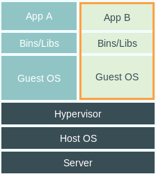
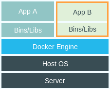
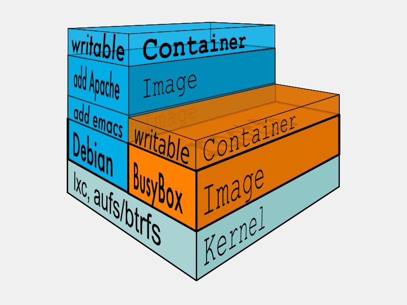
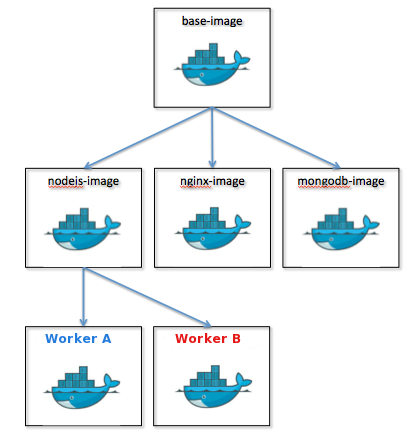

初探 Docker 🐳
为你打招超级开发环境
2016.7.27什么是 Docker?

什么是 Docker?
- 为开发者和系统管理者打造的，用于构建、分发和运行应有程序的开发平台。
- 非常轻量的虚拟化容器
- 跨平台：支持大部分的 Linux 发型版，最近已开始支持 Mac 和 Windows
什么是容器?

传统 VM VS. Docker


直接比对
| 特性 | Docker | VM |
|---|---|---|
| 启动速度 | 秒级 | 分钟级 |
| 硬盘使用 | MB | GB |
| 性能 | 接近原生 | 弱于 |
| 系统支持量 | 单机支持上千个容器 | 一般几十个 |
镜象 VS. 容器
镜象 VS. 容器
为什么你应该关注?
- 更快速的交付和部署
- 更高效的虚拟化
- 更轻松的迁移和扩展
- 更简单高效的管理
当目前为止我们学会了什么?
- 容器 - 轻量的虚拟化环境
- 镜象 - 用来创建容器的只读模板
Docker 命令行
$ [sudo] docker [command] [flags] [arguments]
例如:
$ docker pull centos
$ docker run -d -p 80:80 nginx
怎样运行容器?
$ docker run centos /bin/echo 'Hello World'
user@host:/$ docker run -i -t centos /bin/bash
root@af8bae53bdd3:/#
让我们在容器内部运行一些命令试试：
root@af8bae53bdd3:/# pwd
/
root@af8bae53bdd3:/# ls
bin boot dev etc home lib lib64 media mnt opt proc root run sbin srv sys tmp usr var
操作容器
-
列出本地所有容器：
$ docker ps -
展示容器运行时的标准输出：
$ docker logs <containerId> -
停止运行的容器：
$ docker stop <containerId>
操作容器
-
删除容器：
$ docker rm <containerId> -
启动已停止的容器：
$ docker start <containerId> -
暂停运行的容器：
$ docker pause <containerId>
挂载本地目录或文件
$ docker run -d -p 80:80 \
-v $(pwd)/nginx-example/index.html:/usr/share/nginx/html/index.html \
--name webapp nginx
修改本地的 nginx-example/index.html 看看
挂载本地目录或文件
$ docker run -it --rm -v $(pwd)/python-example/:/root/ \
python:slim \
/bin/bash
root@6f2aef6108b7:/# python root/version.py
3.5.2 (default, Jul 19 2016, 21:14:55)
[GCC 4.9.2]
$ docker run -it --rm -v $(pwd)/python-example/:/root/ \
python:2-slim \
/bin/bash
root@38004526c194:/# python root/version.py
2.7.12 (default, Jul 19 2016, 20:08:29)
[GCC 4.9.2]
数据卷容器
如果你有一些持续更新的数据需要在容器之间共享，最好创建数据卷容器。
首先，创建一个名为 dbdata 的数据卷容器：
$ docker run -d -v /dbdata --name dbdata training/postgres
然后，在其他容器中使用 --volumes-from 来挂载 dbdata 容器中的数据卷。
$ docker run -d --volumes-from dbdata --name db1 training/postgres
$ docker run -d --volumes-from dbdata --name db2 training/postgres
创建镜象
$ docker run -it centos:6.2 /bin/bash
root@6f2aef6108b7:/# yum install git
root@6f2aef6108b7:/# exit
$ docker commit -m "Get git" -a "wuwj" 6f2aef6108b7 wuwj/centos:6.2
仓库
存放镜象的场所，分为公共仓库 (public) 和私有仓库 (private)。
公司目前在 192.168.1.211 上搭建了私有仓库。
$ docker tag wuwj/centos:6.2 192.168.1.211:5000/centos:6.2
$ docker push 192.168.1.211:5000/centos:6.2
用 Dockerfile 来创建自己的镜象
FROM mhart/alpine-node:6.3.0
MAINTAINER wuwj@cairenhui.com
WORKDIR /root
RUN echo 'registry=https://registry.npm.taobao.org/' > .npmrc
# Create app directory
RUN mkdir -p /usr/src/app
WORKDIR /usr/src/app
# Install app dependencies
COPY package.json /usr/src/app/
RUN npm install
# Bundle app source
COPY . /usr/src/app
EXPOSE 8080
CMD [ "npm", "start" ]
用 DOCKERFILE 来创建自己的镜象
$ docker run -t wuwj/nodeapp .
Sending build context to Docker daemon 67.58 kB
Step 1 : FROM mhart/alpine-node:6.3.0
6.3.0: Pulling from mhart/alpine-node
e110a4a17941: Pull complete
710e5c1bdc5a: Pull complete
Digest: sha256:cf643279ade5a6064c9238775d47a6096c3b3c2cba6fde8960e96ad306672b24
Status: Downloaded newer image for mhart/alpine-node:6.3.0
---> fffb49210fed
Step 2 : WORKDIR /root
---> Running in 15c9089753b9
---> 97fb9cb60952
Removing intermediate container 15c9089753b9
Step 3 : RUN echo 'registry=https://registry.npm.taobao.org/' > .npmrc
---> Running in 90cba5df8ab7
---> 0cc936a352a6
Removing intermediate container 90cba5df8ab7
Step 4 : RUN mkdir -p /usr/src/app
---> Running in 9905bef8e47f
---> 94b034ef9bdf
Removing intermediate container 9905bef8e47f
Step 5 : WORKDIR /usr/src/app
---> Running in b6c3286724f2
---> 7ba62c277a26
Removing intermediate container b6c3286724f2
Step 6 : COPY package.json /usr/src/app/
---> e34a30f764f8
Removing intermediate container 6f5420caa8ea
Step 7 : RUN npm install
---> Running in 5eaf2a082a8e
docker_web_app@1.0.0 /usr/src/app
`-- express@4.14.0
+-- accepts@1.3.3
| +-- mime-types@2.1.11
| | `-- mime-db@1.23.0
| `-- negotiator@0.6.1
+-- array-flatten@1.1.1
+-- content-disposition@0.5.1
+-- content-type@1.0.2
+-- cookie@0.3.1
+-- cookie-signature@1.0.6
+-- debug@2.2.0
| `-- ms@0.7.1
+-- depd@1.1.0
+-- encodeurl@1.0.1
+-- escape-html@1.0.3
+-- etag@1.7.0
+-- finalhandler@0.5.0
| +-- statuses@1.3.0
| `-- unpipe@1.0.0
+-- fresh@0.3.0
+-- merge-descriptors@1.0.1
+-- methods@1.1.2
+-- on-finished@2.3.0
| `-- ee-first@1.1.1
+-- parseurl@1.3.1
+-- path-to-regexp@0.1.7
+-- proxy-addr@1.1.2
| +-- forwarded@0.1.0
| `-- ipaddr.js@1.1.1
+-- qs@6.2.0
+-- range-parser@1.2.0
+-- send@0.14.1
| +-- destroy@1.0.4
| +-- http-errors@1.5.0
| | +-- inherits@2.0.1
| | `-- setprototypeof@1.0.1
| `-- mime@1.3.4
+-- serve-static@1.11.1
+-- type-is@1.6.13
| `-- media-typer@0.3.0
+-- utils-merge@1.0.0
`-- vary@1.1.0
npm WARN docker_web_app@1.0.0 No repository field.
npm WARN docker_web_app@1.0.0 No license field.
---> 260b9eb055cf
Removing intermediate container 5eaf2a082a8e
Step 8 : COPY . /usr/src/app
---> 6d05c83ed994
Removing intermediate container dd58b33cb33a
Step 9 : EXPOSE 8080
---> Running in 6fdc2eb7127d
---> 0252c32634ef
Removing intermediate container 6fdc2eb7127d
Step 10 : CMD npm start
---> Running in bc81396443ff
---> fe29e536ef2e
Removing intermediate container bc81396443ff
Successfully built fe29e536ef2e
回顾总结
- 运行容器：
docker run - 手动创建镜象：
docker commit - 利用 Dockerfile 创建镜象
Docker 是如何影响我们的开发？
来一个 Hello World 的例子。
Hello World
$ mkdir repository workspace
$ touch settings.xml
$ tree
.
├── repository
├── settings.xml
└── workspace
Hello World
将以下内容添加到 settings.xml 里：
nexus
*
http://192.168.1.212:8081/nexus/content/groups/public/
Hello World
创建一个 Maven WebApp
$ alias gmvn='docker run -it --rm -v $(pwd)/workspace:/usr/src/app -v $(pwd)/settings.xml:/root/.m2/settings.xml -v $(pwd)/repository/:/root/.m2/repository -w /usr/src/app/ maven mvn'
$ gmvn -B archetype:generate -DgroupId=com.crhdocker.demo -DartifactId=hello-world -DarchetypeArtifactId=maven-archetype-webapp -DarchetypeCatalog=local
hello-world
├── pom.xml
└── src
└── main
├── resources
└── webapp
├── WEB-INF
│ └── web.xml
└── index.jsp
Hello World
构建 Maven 项目
$ alias mvn='docker run -it --rm -v $(pwd)/workspace:/usr/src/app -v $(pwd)/settings.xml:/root/.m2/settings.xml -v $(pwd)/repository/:/root/.m2/repository -w /usr/src/app/hello-world maven mvn'
$ mvn package
hello-world
└── target
├── classes
├── hello-world
│ ├── META-INF
│ ├── WEB-INF
│ │ ├── classes
│ │ └── web.xml
│ └── index.jsp
├── hello-world.war
└── maven-archiver
└── pom.properties
Hello World
将 war 包布署至 tomcat
$ docker run -d -p 8989:8080 \
-v $(pwd)/workspace/hello-world/target/hello-world.war:/usr/local/tomcat/webapps/hello-world.war \
--name webapp tomcat:8
Hello World
制作 Docker 镜象，便于分发
FROM tomcat:8
ADD workspace/hello-world/target/hello-world.war /usr/local/tomcat/webapps/
CMD ["catalina.sh", "run"]
$ docker build --rm -t 192.168.1.211:5000/hello-world .
Hello World
将镜象推送至公司私有仓库
$ docker push 192.168.1.211:5000/hello-world
Hello World
Run Anywhere!
user@host:/$ docker pull 192.168.1.211:5000/hello-world
user@host:/$ docker run -d -p 8989:8080 --name webapp 192.168.1.211:5000/hello-world
能够让我们的开发、测试、运维，运行同一版本的应用，而不用去管倚赖的系统或工具和类库，甚至是不同配置吗？
容器连接
$ docker run -d --name pg -t postgresql
$ docker run -d -p 8000:8000 \
--link pg:database -t django_app
root@f9e4e78c60c6:/$ cat /etc/hosts
172.17.0.9 database
root@f9e4e78c60c6:/# export
DATABASE_PORT="tcp://172.17.0.9:5432"
DATABASE_PORT_5432_TCP="tcp://172.17.0.9:5432"
DATABASE_PORT_5432_TCP_ADDR="172.17.0.9"
DATABASE_PORT_5432_TCP_PORT="5432"
DATABASE_PORT_5432_TCP_PROTO="tcp"
多容器协奏曲
配置文件 `docker-compose.yml`
version: '2'
services:
db:
image: postgres
web:
build: .
command: python manage.py runserver 0.0.0.0:8000
volumes:
- .:/code
links:
- redis
ports:
- "8000:8000"
depends_on:
- db
redis:
image: redis
多容器协奏曲
弹奏协奏曲
$ docker-compose up
Pulling image redis...
Building web...
Starting composetest_redis_1...
Starting composetest_web_1...
redis_1 | [8] 02 Jan 18:43:35.576 # Server started, Redis version 2.8.3
web_1 | * Running on http://0.0.0.0:8000/
web_1 | * Restarting with stat
多容器协奏曲
弹奏永恒协奏曲
$ docker-compose up -d
Starting composetest_redis_1...
Starting composetest_web_1...
$ docker-compose ps
Name Command State Ports
-------------------------------------------------------------------
composetest_redis_1 /usr/local/bin/run Up
composetest_web_1 /bin/sh -c python app.py Up 8000->8000/tcp
Build once and run anywhere